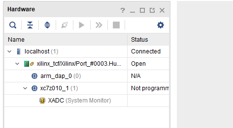

Xilinx下载器驱动问题
Win10系统下，安装多个版本Vivado后，Xilinx DLC9驱动不识别问题。
问题背景
刚开始，电脑上安装了Vivado2015.4和ISE14.7两个软件，使用一切正常。后续有了升级Vivado版本的需求，又在电脑上装了2017.4版本的Vivado。
装好了2017.4的版本后，当插上DLC9下载后，状态灯成暗红色（原来正常情况下应该亮红色），开发板通电后，DLC9的状态灯没有变化，依然是暗红色（正常应该变为绿色）。
然后打开Vivado2017.4软件，进入Hardware Manager，然后点击Auto Connect后，从系统音判断，下载器出现了几次弹出操作，然后DLC9的灯状态变成绿色了，从设备管理器看驱动状态，好像也正常了。
但事实上，还是扫不到器件，报错信息如下：
尝试换成ISE的impact工具来用，发现还是没法扫链：WARNING:iMPACT:923 - Can not find cable, check cable setup !
解决问题
根据问题现象，判断问题应该是出在驱动。于是重新安装Vivado2015.4的驱动。
进入Vivado2015.4的安装路径下：D:\Xilinx\Vivado\2015.4\data\xicom\cable_drivers\nt64
以管理员身份运行驱动安装程序：
重新安装驱动以后，再次插上DLC9下载器，灯初始状态就正常了，然后打开Vivado的Hardware Manager，也可以成功扫到器件了。

问题总结
在安装多个版本Vivado的场景下，如若下载器驱动出现问题，重新安装相应版本的驱动即可，特别注意的是：
重新安装驱动时，一定要用系统管理员方式安装！！！
原文作者: cdutcl
原文链接: http://cdutcl.xyz/2020/02/26/xilinx-driver/
版权声明: 转载请注明出处(必须保留原文作者署名原文链接)